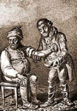

|
Physicians or "Physicks" prescribed and administered medicinal cures for all types of ailments. Surgeons removed the problem with a knife! Both types of medical practicioners lived in colonial Albany. This important but complicated topic will be treated extensively in the months to come! For now, here are some of early Albany's outstanding medical practicioners: The Staatses "operated" in seventeenth century Albany! The Van Dycks were their cure-driven counterparts! Abraham Van Tricht was a surgeon and coroner in Albany until his death in 1687. Scottish-trained, Maryland physican Dr. Alexander Hamilton commented on the Albany medical community when he visited the area in 1744. His observations are telling: "A great many of them take the care of a family for the value of a Dutch dollar a year, which makes the practice of physick a mean thing, and unworthy of the application of a gentleman. The doctors here are all barbers." Trained in Boston, Albany native Peter Gansevoort practiced medicine in Albany throughout the second half of the eighteenth-century. Dr. Henry Van Dyck was one of the last of Albany's traditional physicians. Son, grandson, and great-grandson of an Albany physician, he served a great cross-section the city's society. Coming to Albany during the French and Indian War, Philadelphia-trained Dr. Samuel Stringer innoculated for smallpox! The Revolutionary War brought a number of more "enlightened" physicians to Albany marking the beginning of the medical profession in the city. These included Princeton-educated Continental army surgeon Hunloke Woodruff who became the partner of another relative newcomer named Wilhelmus Mancius. Other post war newcomers included Scottish-trained William Mc Clelland and his partner and successor William Bay.
Sources: The prime resource for early
Albany's medical community remains "Biographical Memoirs of Physicians
in Albany County," by Dr. Sylvester D. Willard, Annals
of Albany, volume 9, pp. 90-115. Janny Venem's community
study entitled Beverwijck,
includes a section on "Medical care, " pp. 128-31. Surgeon was sometimes spelled "chyrurgion." Go figure! first posted: 2/25/03; last revised 1/4/11 |